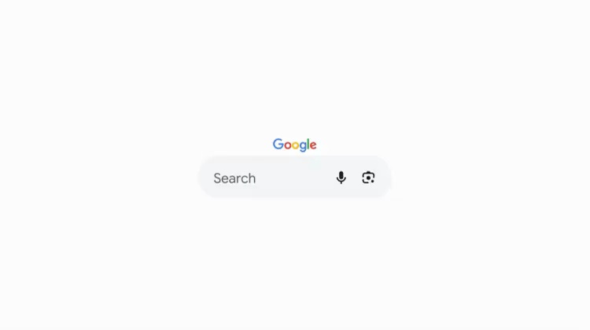
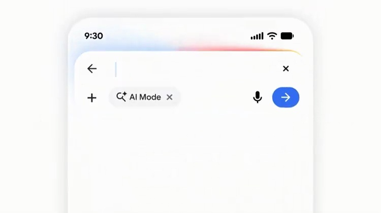
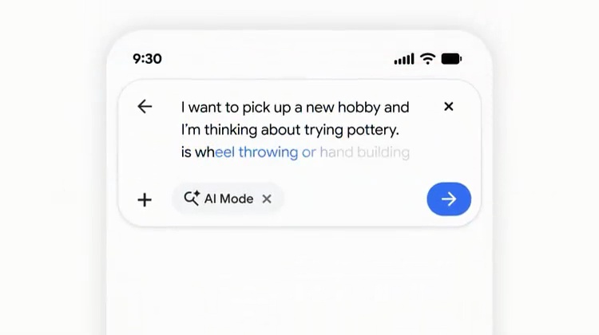
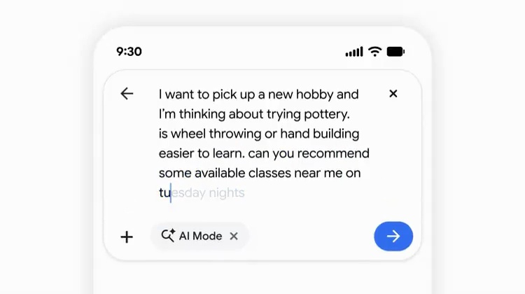

Google / V017
Google Search (AI upgrade) — At #GoogleIO last month,…
让一个熟悉的搜索框逐渐容纳完整问题。文字变多时，界面用空间增长来回应。
构图与编排 可播放 · 可替换内容
整体编排规则示例
查看 HTML 源码
<!doctype html><html lang="zh-CN"><meta charset="utf-8"><meta name="viewport" content="width=device-width,initial-scale=1"><title>Google Search (AI upgrade) — At #GoogleIO last month,… · sequence</title><style>html,body{margin:0;width:100%;height:100%;overflow:hidden;background:#ffffff}canvas{display:block;width:100%;height:100%;object-fit:contain}</style><body data-mode="sequence"><canvas width="1000" height="600"></canvas><script src="data.js"></script><script src="common.js"></script><script src="scene.js"></script><script src="bridge.js"></script></body></html>画面元素搜索胶囊品牌光晕输入文字手机模式标签发送钮
MOTION LANGUAGE
动作与构图
局部动作 · 构图规则
01
从短胶囊到多行输入
白色胶囊放在大面积留白中，细阴影区分边界，四彩光晕集中在外缘。无衬线文字保持深色和稳定字号。
短输入先以单行呈现，进入手机后扩为多行问题框；每次换行向下增高，发送入口贴住右下角。
02
长问题有清楚的阅读顺序
长问题有清楚的阅读顺序规则示例
查看 HTML 源码
<!doctype html><html lang="zh-CN"><meta charset="utf-8"><meta name="viewport" content="width=device-width,initial-scale=1"><title>Google Search (AI upgrade) — At #GoogleIO last month,… · sequence</title><style>html,body{margin:0;width:100%;height:100%;overflow:hidden;background:#ffffff}canvas{display:block;width:100%;height:100%;object-fit:contain}</style><body data-mode="clip" data-start="10" data-end="22"><canvas width="1000" height="600"></canvas><script src="data.js"></script><script src="common.js"></script><script src="scene.js"></script><script src="bridge.js"></script></body></html>先写目标，再补时间、地点或条件。按句子逐段输入，前一句完成后才增加下一条限制，框体高度跟随内容增长。
03
迁移到其他意图输入
可换品牌、问题和边缘光色。适合从关键词升级到完整请求的产品；正文长度增加时优先扩大容器，保留可读字号与发送按钮位置。
SEQUENCE
段落与节奏
点击段落，定位到上方编排示意。




画面参考 · 离散静帧
KEEP THE RELATIONSHIPS
制作其他主题
- 迁移保留短查询→长意图的容量变化。
- 文字替换须真实换行并随内容扩高。
制作约束
搜索胶囊 / 品牌光晕 / 输入文字 / 手机 / 模式标签 / 发送钮
- 从短搜索栏扩大为多行问题框，体现由关键词到完整意图。
- 光晕沿边缘强调激活，正文保持高对比。
- 输入增多时容器增高而非缩小文字。